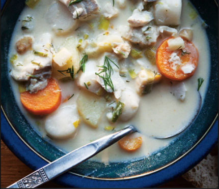

Norse Fish Soup

How To Make Fish Soup
Try this traditional Norwegian fish soup on a cold autumn day. Choose your favorite fish, either haddock, cod or wolffish, they are all suitable in the soup.
Ingredients
- haddock fillet
- caroot
- butter
- fish stock
- lemon
- double cream
- curry
- chives, fresh
Steps
- Dice the fish, and carrot, celeriac and root parsley.
- Melt butter and mix in flour and fish stock until thicc
- Add veggies and let boil about 15 mins, then removing veggies from soup.
- Ad remianing ingredients to soup, let cook for five minutes until fish is done.